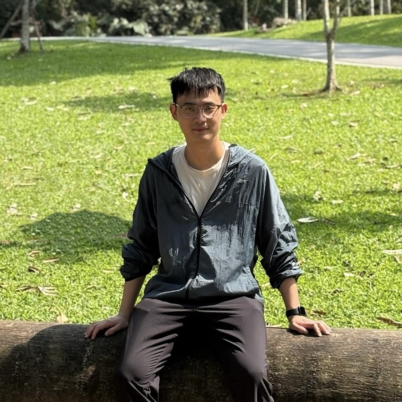

Tianao Ge

I am a PhD student at Hong Kong University of Science and Technology (Guangzhou), under the supervision of Prof. Hongyuan Liu and Prof. Xiaowen Chu. My research interests are in computer architecture and optimizing compilers.
Before I joined HKUST-GZ, I graduated from Sun Yat-sen University with a master's degree in 2022, advised by Prof. Xianwei Zhang. And I received my B.Eng. degree from Wuhan University of Technology in 2020.
Contact: getianao [AT] gmail [DOT] com
Publications
- [ASPLOS'24].
Tianao Ge, Tong Zhang, Hongyuan Liu,
ngAP: Non-blocking Large-scale Automata Processing on GPUs.
- [Best Paper Award] Code, Slides, Poster, Lightning Talk
- [LCTES'22]. Tianao Ge, Zewei Mo, Kan Wu, Xianwei Zhang and Yutong Lu, RollBin: Reducing Code-size via Loop Rerolling at Binary Level.
- [CCGrid'22]. Yue Weng, Tianao Ge, Xianwei Zhang and Yutong Lu, RAISE: Efficient GPU Resource Management via Hybrid Scheduling.
Teaching
- TA for MICS6000R: Advanced Compilers. Spring 2024, HKUST(GZ).
- TA for MICS6000J: GPU Architectures and Programming. Fall 2023, HKUST(GZ).
- Talk at DCS290: Compilation Principle. Spring 2022, Sun Yat-sen University.
- TA for DCS5637: Advanced Computer Architecture. Fall 2021, Sun Yat-sen University.
- Talk at DCS290: Compilation Principle. Spring 2021, Sun Yat-sen University.
Service
- ASPLOS 2024, Artifact Evaluation Committee
- MICRO 2023, Artifact Evaluation Committee
- ICCD 2023, Sub-Reviewer
- EuroSys 2023, Artifact Evaluation Committee
Experience
| Jan. 2024 - Now | |
| Visiting Student, Advisor: Prof. Xulong Tang |
| Intel, Shanghai, China | May 2021 - Oct. 2021 |
| Software Engineer Intern, Deep Learning Compiler |
| Dec. 2019 - July 2020 | |
| Software Engineer Intern, 3D Rendering Engine |
Awards & Honors
- ASPLOS’24 Student Travel Grant, SIGPLAN, 2024
- ASPLOS’24 Best Paper Award, ASPLOS, 2024
- Outstanding Graduate, Wuhan University of Technology, 2020
- First-Prize Scholarship (Top 5%), Wuhan University of Technology, 2018